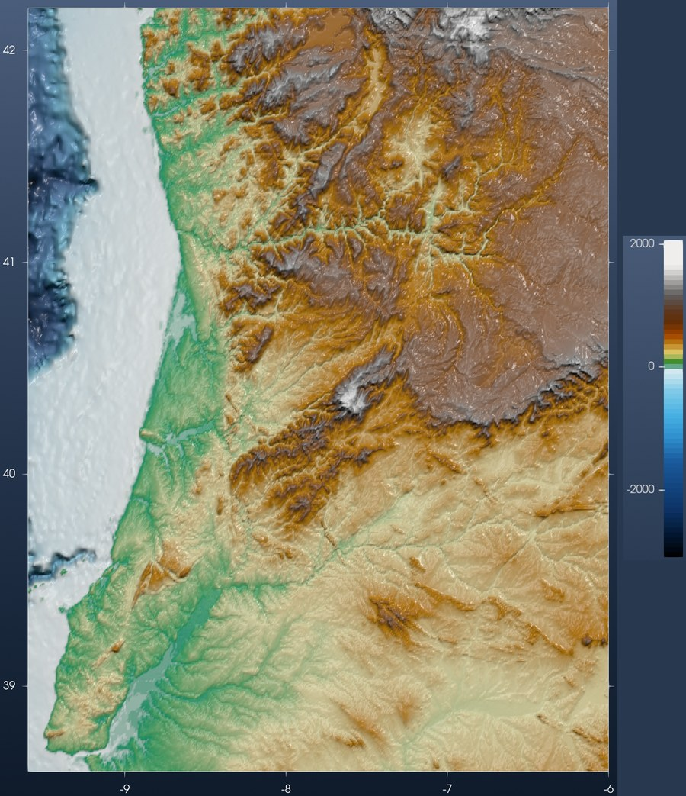
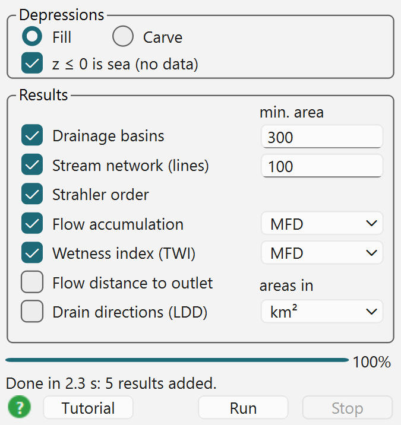
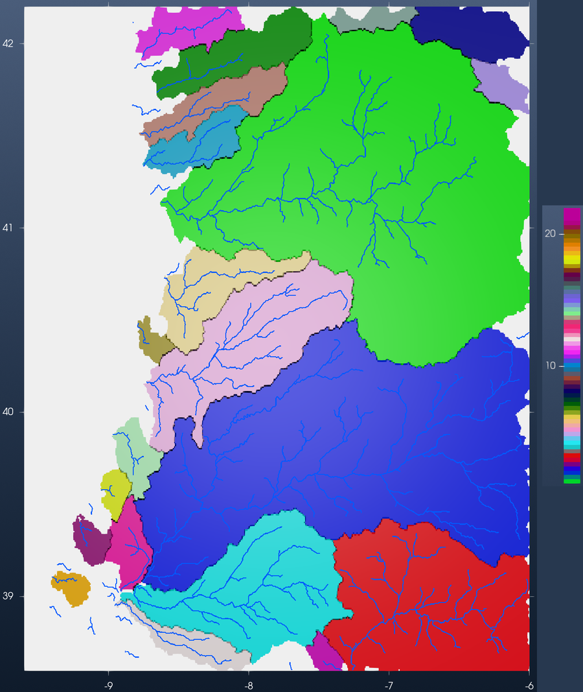
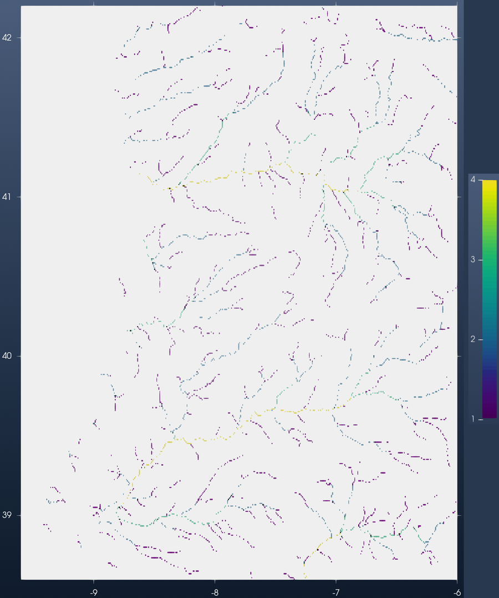
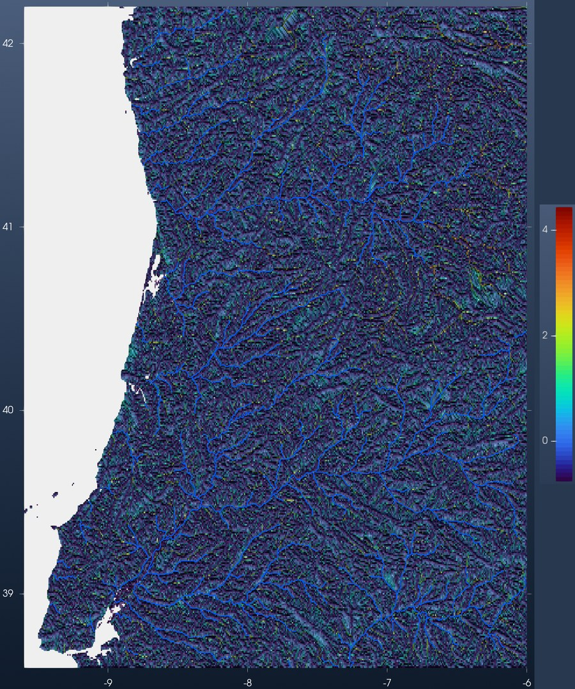
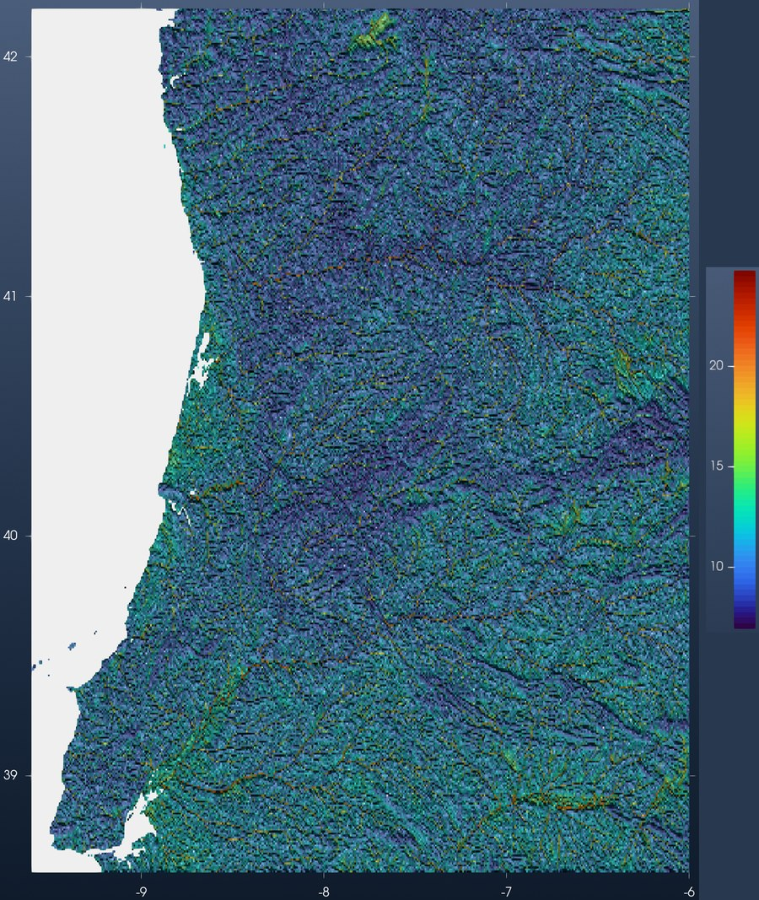

Tutorial: Drainage analysis
Grid Tools → Drainage analysis… — a worked example. Every control of the dialog is explained on its help page, which the green ? of the dialog opens.
From a digital elevation model alone, this tool works out where the water goes: the drainage basins (catchments), the river network with its Strahler order, the flow accumulation (how much area drains through each cell), the topographic wetness index, the distance to the outlet along the flow, and the drain directions in the form hydrological models such as LISFLOOD read. The computation is done by GMT.jl's hydrology functions (flowdir, flowacc, drainagebasins, streamnet, streamorder, twi, flowdistance, ldd), which can also be called from the Julia Console (see Going further in the console).
1. A DEM on display
The tool works on the grid on display in the window. Any DEM will do: open a GeoTIFF or netCDF file with File → Open…, or fetch one in the console. This tutorial uses the 15 arc-second relief of central Portugal:
G = gmtread("@earth_relief_15s", region=(-9.6, -6.0, 38.6, 42.2))
iview(G)
The grid has 864 × 864 cells of about 450 × 350 m. It includes the sea floor, which matters below.
2. The dialog
Open Grid Tools → Drainage analysis…. In a window with no grid it opens too, so that its help page (the green ?) is always at hand, but everything else is greyed out until a grid is loaded.

Depressions. Real DEMs are full of small pits — cells lower than all their neighbours, mostly noise — where water would stop and the basins would break into thousands of fragments. They must be removed first:
- Fill raises each pit to the level of its lowest rim, like filling a bowl until it spills. Robust; the filled hollows become flat areas, and the flow on them is routed toward their spill point.
- Carve keeps each pit at its own elevation and lowers a narrow channel from it through its rim instead. It changes fewer cells and suits DEMs where a road or a dam blocks a valley.
z ≤ 0 is sea (no data). Cells at or below zero are treated as sea, so rivers end at the coast. Keep it ticked for DEMs that include bathymetry, like @earth_relief; untick it for land below sea level (the Dead Sea, polders) or a DEM on a different datum.
Results. Tick what you want. Each one is added to the window as a new layer:
| Result | What it is |
|---|---|
| Drainage basins | every cell labelled with the basin it drains to; 1 = the largest |
| Stream network (lines) | the rivers as lines on top of the display, one line per reach |
| Strahler order | a grid with the order of each river cell |
| Flow accumulation | log10 of the upstream area draining through each cell |
| Wetness index (TWI) | ln(a / tan β): where water collects and stays |
| Flow distance to outlet | distance along the flow path to the basin outlet |
| Drain directions (LDD) | flow direction of each cell, PCRaster keypad code (8 = north, 5 = outlet) |
min. area — the smallest basin kept, and the upstream area at which a river starts (the stream network and the Strahler order use the second one). The unit is chosen in areas in: cells, or km² for a georeferenced DEM (geographic, or projected in metres). Here one cell is about 0.16 km², so 300 km² keeps the main basins and 100 km² draws rivers from about 600 cells of catchment.
The two method boxes choose how water is passed downhill for the flow accumulation and the wetness index — see Which flow method.
3. Run
Press Run. The bar and the line under it follow the computation (Filling depressions, Flow directions, Flow accumulation…). The window stays usable meanwhile, and Stop ends the run — nothing is added then. On this DEM the whole set takes about 3 seconds.
When it ends, the results appear in Scene Objects, named after the source grid ("… drainage basins", "… wetness index (TWI, MFD)", …). The basins are what the window shows, with the river network on top:

The Douro (green), the Vouga, the Mondego, the Tejo (blue) and, at the bottom, the Sado and the Guadiana: the main basins of the region, each with its own colour. The white strips along the coast are small basins under the 300 km² limit. Check any other result in Scene Objects to see it.
4. The other results
Strahler order. Headwater streams are order 1; where two streams of the same order meet, the order goes up by one. It ranks the rivers by size. (Untick the stream lines in Scene Objects to see the grid under them.)

Flow accumulation. The upstream area of every cell, as log10 of km²: 0 is 1 km², 4 is 10 000 km². The rivers stand out as the lines of large values; every cell has one, also on the hillslopes.

Wetness index. TWI = ln(a / tan β), with a the area draining through a unit width of contour and β the local slope. High values mark the places that collect a lot of water and drain it slowly — valley floors, hollows, the foot of slopes: wet soils, saturation-excess runoff, wetlands. Low values mark crests and steep slopes.

Flow distance gives, for every cell, how far the water travels to the outlet (km). Drain directions (LDD) writes the flow direction of each cell in PCRaster's code — the Ldd map of a LISFLOOD setup; save the layer from Scene Objects to use it.
Which flow method
- D8 sends all the water of a cell to its steepest neighbour. Every cell belongs to exactly one flow path, which is what basins, rivers and LDD need — those results always use D8. On smooth hillslopes it draws artificial parallel lines.
- MFD (multiple flow direction) shares the water among all lower neighbours, in proportion to their slope. Smooth and realistic on hillslopes, but it makes rivers several cells wide.
- D∞ splits the water between the two neighbours that bracket the steepest direction. Exact on planar slopes, less spreading than MFD.
For the accumulation map as a picture of the rivers, use D8. For the wetness index and anything about hillslopes (soil moisture, erosion, landslide susceptibility), use MFD — the usual choice — or D∞.
How long it takes
Almost all the time goes into removing the depressions; the basins themselves take a second or two even on very large grids. Measured times:
| DEM size | Depressions + directions | Basins | MFD accumulation |
|---|---|---|---|
| 0.75 M cells (this tutorial) | 0.3 s | < 0.1 s | 0.2 s |
| 25 M cells (5000 × 5000) | 3 s | 0.4 s | 5 s |
| 100 M cells (10000 × 10000) | 16 s | 2 s | 24 s |
Memory: about 40 bytes per cell on top of the DEM (4 GB for 100 M cells).
Going further in the console
The same functions are at hand in the window's Julia Console (its button in the status corner; there fig is the window), with options the dialog does not show. The basin above a point — here the Mondego above Coimbra — with the point first moved onto the river (snap = search radius in cells):
F = flowdir(G, sealevel=0) # depressions + D8 directions
B = drainagebasins(F, outlets=[-8.43 40.21], snap=5) # the basin above that point
A = flowacc(F, area=true) # upstream area, m²
maximum(A.z[.!isnan.(B.z)]) / 1e6 # ≈ 4990 km²
add!(fig, B; name="Mondego at Coimbra")Other things only the console offers:
flowdir(G, sinks=M)— keep the cells of maskMas real sinks (endorheic lakes, karst);flowacc(F, weights=P)— accumulate a quantity per cell (rainfall, runoff) instead of area;flowacc(F, method=:mfd, p=…)— the MFD exponent: ≈1 spreads widely, large values approach D8;twi(F, minslope=…)— the slope floor for flat cells (default 0.001).
Each function's help (?flowdir, ?flowacc, …) lists all its options.